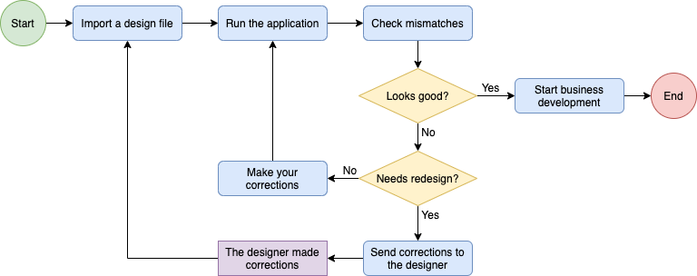

This article aims to be a guide for those developers who start their application development by importing a design file. Also, it provides tips and good practices.
In Figure 1, you can see how a development workflow should be when you decide to start building your application with a design file. First of all, import the file sent by your designer, who should have followed the guidelines provided in the guide for designers, conventions, and best practices articles to achieve a good-looking application for GeneXus. Then, you (as a developer) should check the generated objects and start a cycle checking how good the application looks at runtime, deciding if it is your responsibility to fix the UI (e.g. in case the design file contains complex controls) or if it is the responsibility of the designer to fix something in the design. This cycle should be done in conjunction with both developers and designers, working together, before starting the business logic development.
|  |
| Figure 1. DesignOps workflow with GeneXus |
In the early stages of a DesignOps cycle, it is recommended that you design & import a single panel at a time. Following this mechanism, developers & designers can not only learn from each other but they can also see how the application starts growing. On the other hand, while a developer starts coding the designer can start drawing a new panel for the next iteration, repeating this cycle until you have a fully functional application.
Remember that you (as a developer) have a powerful tool for inspecting the UI at runtime: Live Editing. This tool will help you to find design mismatches that you can easily fix for achieving a great looking app. Also, do not forget to check the Native Mobile Applications Prototyping article in case you desire to import a mobile design.
Stencil objects are generated from Symbols / Components defined by the designer.
Remember that these objects aim to be reusable in multiple panels, so check if you can identify components in your application that should be reusable, and tell your designer to make a new Symbol. Also, check if their instances are correctly applied (overridden values, theme-class applied, etc.) -- you can find those instances by looking at the References of the target stencil.
Panel objects or Web Panel objects are generated from Artboards / Top-Level Frames defined by the designer depending on whether you checked the Import as Web Panel option or not.
The Layout tab of these objects will be generated from those Groups that the designer defined, and controls will be generated through the conventions applied. In every table, the cell sizes (width/height, absolute or relative) and positions will be generated from Resizing Constraints defined by the designer. Take this into account when importing in case the designer forgot to apply some rules in the design for achieving a good result. Also, if the designer has linked its panels, the Code tab will have the corresponding Call event, and a Form Enter/Exit effect transition is applied if the designer included animations.
Image objects are generated from the images included in the design and also from the layers marked as 'Exportable' (e.g. logos drawn by the designer). These images should have been exported by the designer with the correct densities (1x, 2x, 3x, etc.) in order to display them correctly in the target platform; otherwise, a black image is displayed as a placeholder.
A set of File objects (.otf, .ttf) will be generated for all embedded Fonts in the design file. Then, those Files will be referenced as @font-face rule in the Design System Styles section. Finally, set them in the corresponding theme-class (the Class property value of the target control).
A set of style-classes will be generated in the Design System Styles section. Every control will have its own style-class unless the designer has defined Styles for it. In case you reimport a design file, remember that the properties will be overridden if you modified them by hand.
Each style-class will inherit from a parent prefixed with a "ExternalDesign" string. For example, if GeneXus infers the tyle-class of a Variable, it will generate a theme-class of an Attribute class that inherits from a "ExternalDesignAttribute" class (similarly to other theme-class categories).
A #color group will be generated in the Design System Tokens section and will include those colors defined by the designer as Sytles, especially as Fill, Border, or Text styles (every color will be suffixed with one of these three categories), and also will include every color defined as Colors Variable / Style in your design.
These sections apply as of GeneXus 17.